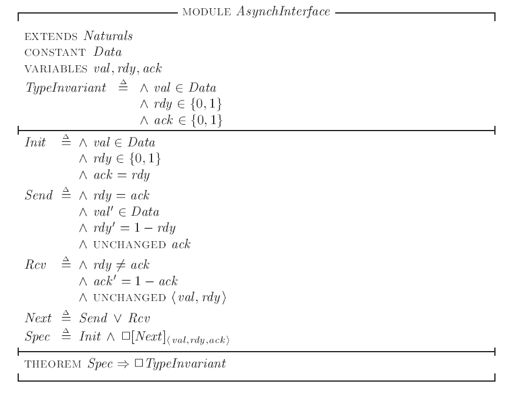

在上一篇文章中，我们用几个简单的例子介绍了TLA+的基本结构和基础语法。接下来我们将要关注如何用TLA+刻画真实的计算系统，首先我们会从稍简单的并发系统开始，在描述这些系统时可能会用到一些新的语法，我们会随时对这些语法进行介绍。
A Asynchronous Interface
首先从最简单的异步系统开始，我们考虑如何在两个异步设备之间传输数据：
我们需要将信息送sender发送到receiver，数据在val中被传输，rdy和ack则用来同步。sender必须等待上一个数据的acknowledgment（ack)返回后，才能发送下一个数据。一个可能的执行行为示例如下：
可以发现在上图中我们将val和rdy的变化合并在了一个step里，实际上在真实的物理世界里这是不合理的，因为这两个值代表了两个不同物理设备上的电压，它们不可能完全精确的同时变化。但我们之前说过，抽象意味着忽视不重要的细节，我们这样的做法虽然看似与真实世界矛盾，但其实更好的完成了抽象的目标，可以帮助我们更轻松地分析系统的性质。
抽象的粒度是我们在刻画系统时需要决定的一个重要因素，如果粒度过细，会导致细节过多，失去了抽象的意义，如果过粗，又可能会导致一些错误。TLA+并不能教我们如何做抽象，如何选择出。我们做抽象的时候总希望尽可能简单，在保证反映出系统核心性质的前提下忽略尽可能多的无关细节。
The First Specification
理论上我们描述的异步接口可以传输任意类型的数据，但在实际某个具体的系统中我们传输肯定只能是特定范围的数据集中的数据，比如：32位的数据。
然而，无论我们想要传输的是32位还是128位的数据，我们的传输协议就相同的，也就是说我们接口构造的本质是不变的。我们既想说明在具体的系统中可传输的数据范围是有限的，又想说明这个数据范围的选择其实是任意的。为此，我们要使用TLA+中的一个重要的关键词CONSTANT来修饰可以传输的数据集：
1 | CONSTANT Data |
这意味着我们可以传输的数据将从某个给定的数据集中选取。我们可以用上篇文章中提到的类型不变量说明val必须在Data中选取，同时我们可以说明rdy和ack必须从0和1中选取：
1 | TypeInvariant == /\ val \in Data |
接下来考虑状态转移公式Next，我们的异步接口一共可能有两种状态的转移，分别是发送一个值和接受一个值，我们将它们分为Send 和 Rcv两个Action分别定义。
对 Send action，先来考虑它的激活状态，只有当rdy = ack时，我们才知道两个接口是同步的，才被允许发送一个信息，因此rdy = ack 应该是Send的第一条语句。
剩下的语句将描述Send中状态是如何转移的，首先我们新的传输值可以是Data中的任意数据，$val’ \in Data$, rdy应该选取与前一状态的值不同的另一个值，rdy’ = 1 - rdy，最后我们还要说明ack的值要保持不变，TLA+中定义了UNCHANGED函数帮我们方便的说明一个变量的值需要保持与前一状态相同。
1 | Send == /\ rdy = ack |
同理，我们也可以轻松写出Rcv的action公式，最后我们给出完整的Spec：

Another Specifation
上一节中我们得到的 Module AcynchInterface 已经是一个对我们给出的异步接口的良好的刻画，但如果我们想在刻画更复杂的系统时利用这个异步接口的Spec的话，我们还需要对这个Spec进行一些优化，使它可以更好的作为复杂系统的一部分。
首先第一个问题是，第一个Spec中为了刻画一个简单的接口我们使用了三个变量。在复杂的系统中，我们希望用到的变量尽可能少，要避免出现变量数目的膨胀。
TLA+提供了records将多个有关的变量合并成一个，records类似于编程语言中的struct。我们可以用一个变量 chan 来替换原本的三个变量 val，rdy和ack，像之前一样，我们可以用type invariant 说明chan的类型：
1 | CONSTANT Data |
chan 有三个fields来分别对应val,rdy,ack三个变量，我们可以通过 chan.val, chan.rdy, chan.ack 的方式来分别引用它们。
[val : Data, rdy : {0,1}, ack : {0,1}]代表了fields为val,rdy和ack，且val的值是集合Data中的一个元素，rdy和ack的值是{0，1}中一个元素的所有records的集合。
此外，我们可以用action Send(d)代替原本的Send，这样可以更明确的用d代指我们传输的数据。原本的Next公式可以写作：
$$Next \triangleq (\exist\ d\ \in\ Data : Send(d)) \vee Rcv $$
Send(d)的公式可以写作：
1 | Send(d) == /\ chan.rdy = chan.ack |
我们还可以用另一种方式来表达对chan’的赋值：
1 | chan' = [chan EXCEPT !.val = d, !.rdy = 1 - @] |
上式指代了一个除了val和rdy的值改变，其他fields的值与chan中对应值相等的一个新的record。在!.rdy处出现的@指代了chan.rdy。
一般来讲，后一种表达方式往往会更多地被选用，因为它往往更加简单。
同理，我们不难写出新的Rcv的表达式，第二版的Spec如下：
2PC
事务提交（Traction Commit)
事务（Traciton)是一个常见的计算机术语，是数据库中对数据进行访问或者更新的一个基本执行单位。事务有ACID四个特性，在这里我们不展开讨论。本节中我们想关心的是，在一个分布式系统中的多节点数据库里，我们如何保证各个节点事务提交的一致性。
在多节点数据库中，事务被各节点中的处理器分别执行，我们称之为RM(Resource Managers)。
一个事务最终可能被commit也可能被aboart，只有当所有的RM都同意commit时，事务才会被commit，而当任一个RM选择abort时，事务都必须被abort。
一个RM在处理事务时可能有如上四个状态：{working,prepared,commited,aobrted}。只有当一个RM中的处理器完成事务所需要的执行进入准备状态后，才能决定commit一个事务，但工作状态下只要出现错误和意外（比如宕机），随时都可以决定abort一个事务。
接下来我们考虑如何用TLA+刻画事务提交的过程，这并不是一个复杂的Spec:
首先我们可以用常量Constant RM 表示所有的节点RMs，我们需要一个变量来记录每个RM的状态，这时就要用到一个新的变量类型function。
有基本中学数学知识的人并不会对function陌生，它的主要作用是将一个变量映射到另一个。在程序语言中，array和map都可以说是一种function，但不同的是，array的定义域只能是从0开始连续的整数，map的定义域只能是某种相同类型变量的集合，而数学和TLA+中function的定义域可以是任意变量的集合。
function有关的语法如下：
我们可以定义一个变量rmState来记录所有RM的状态，并用类型不变量说明它必须是将每个RM映射到它对应的状态的函数。
1 | VARIABLE rmState \* rmState[rm] is the state of resource manager rm. |
有了变量rmState后，我们就可以进一步定义Init和action语句，action将包括prepare(r)和decide(r)两步，分别代表某个RM r 从working到prepared和prepared到commited/aborted的过程，由于过程并不复杂，这里不再赘述，可以参看后面的完整代码。
一个Next公式一定是某个RM r执行prepare或者decide的过程，我们可以借助$\exist$符号表示：
1 | TCNext == \E r \in RM : Prepare(r) \/ Decide(r) |
此外，我们还要定义一个表达一致性的不变量TCConsistent，它可以说明按照我们的Spec，最终得到的系统会满足事务提交的一致性，也就是说不会有两个RM，一个选择commit，一个选择abort:
1 | TCConsistent == |
下面是一个刻画事务提交过程的完整spec，Lamport贴心地在每个语句后面都给出了注释。
1 | CONSTANT RM \* The set of participating resource managers |
2PC（2 Phase Commit)
再刻画完事务提交的Spec之后，接下来就要考虑一个能实现事务提交的算法，2阶段提交（2 phase commit)就是一个可以实现事务提交的算法。
要想实现各节点决策的统一，一个最直接的想法就是找一个中心节点来记录所有节点的状态。2PC采用就是这样的方式，我们将中心节点称为tm(transaction managergu)，每个rm要先后将自己的状态提交给TM两次，因此称之为2PC。
第一阶段中，tm向各个rm提出一个提议，各个rm进入working状态，在处理完成后rm进入prepared状态并通知tm。
第二阶段中，tm根据所有rm的反馈，选择提交或者中止事务，如果所有rm全部同意则提交，如果有一个不同意则就要中止。
如果不考虑节点宕机的情况，2pc可以很好地解决之前定义的事务提交一致性问题。如果要进一步考虑宕机等问题，我们还要设计更复杂的算法，如同样知名的3pc，在本文中我们只考虑较为简单的2pc算法。
下面我们考虑用TLC来严格地刻画2pc:
首先考虑需要刻画的变量，
1 | CONSTANT RM |
- 像定义TC时一样，我们仍需要定义一个常量表示RM以及记录所有rm状态的变量rmstate。
- 由于我们加入了调节节点tm，我们需要定义tmstate变量来记录tm的状态。
- 在阶段1的提交中，tm需要记录所有rm节点的工作状态，我们定义tmPrePared变量记录所有处于prepared状态的结点。
- 此外，我们还想更明确地刻画rm向tm的信息提交过程，我们定义msgs变量来记录正在传输中的messages。
在2pc算法中可以被传输的message有两种，阶段1中的prepared信息和阶段2中的commit/abort信息，用TLC语言刻画如下：
1 | Messages == |
按照惯例，我们用类型不变量TypeOK来说明每个变量的变量类型，
1 | TPTypeOK == |
- rmstate的类型不变量与在TC中定义的相同，是定义域为RM，值域为四种状态的函数。
- tmstate有”init”和”done”两种可能，代表算法正在执行还是已经完毕。
- tmPrepared是RM的一个子集，代表RM中已经进入准备状态节点。
- msgs是所有可能出现的信息集合Messages的一个子集。
在算法开始时，所有rm节点应该处于working状态，tm节点应该处于init状态，此时，还没有任何rm节点完成工作，也没有任何消息被传输，因此tmPrepared和msgs都应该为空集：
1 | TPInit == |
接下来考虑TPNEXT中应该包含的几个状态转移过程，我们需要刻画rm进入准备/中止状态和tm选择提交或者终止的过程，以及所有相关的消息传输和接受的过程：
1 | TPNext == |
读者可以自行尝试刻画这7个状态转移子过程，完成后再与下文的完整spec对照：
1 | CONSTANT RM \* The set of resource managers |
(完)